GPS 인터렉션 오브젝트
이 문서는 포트폴리오 공개를 위해 재구성·수정된 것으로, 실제 서비스에 적용된 원본과 다를 수 있습니다.
1️⃣개요
히스토리
유물상자(물음표)가 생성되어진 곳으로 유저가 이동했었다.
스캐너를 돌리고 상자가 생성된 위치로 이동을 했다.
보상위치가 정해져있어서 수동적으로 걸어다녀야만 했다.
진행방향
유저가 이동하는 경로에 보상(주머니)가 보여질 것이다.
능동적으로 걸어다닐 때, 보상이 보인다.
물음표 생성은 그대로 유지한다. (유저의 이동 목적이 되어야하니까)
다만 유저의 위치에서 좀 더 멀리서 생성되어도 된다.
주머니란?
스캐너 또는 유저가 해당지역에 머물렀을 때 생성되는 보상이 아니라
맵에 퍼져있는 보상을 유저가 찾아다니면서 먹을 수 있는 개념.
B5에서는 물음표(암상인 또는 유물상자)가 유저에게 이동할 방향성을 제시할 것이며,
이동 중에 발견되는 주머니를 추가적으로 얻는 방식으로 진행.
유저 주변에 있을 때만 보여지고 거리가 멀 경우 보이지 않는다.
주머니를 오픈
메가폰을 지불해서 오픈한다.
무료오픈을 하기 위해서는 주머니 위치까지 이동해야한다. (보정 80m - 유물상자와 동일)
2️⃣앞으로 개발사항
사라지는 것
- GPS 상자
- 체인 박스
- 최초 방문 그리드 스캔보상 삭제
스캔기능의 변경 사항.
이전
- 유물상자 생성
- GPS상자 생성
- 레이드 정보 알림으로 받음
- 물음표 오픈
- 빌딩특성 오픈
앞으로
유물상자 생성GPS상자 생성- 레이드 정보 알림으로 받음
- 물음표 오픈
- 빌딩특성 오픈
물음표
- 생성조건
- 본진근처 생성
- 유저가 그리드에서 일정시간 머물렀을 때 생성
- 생성수량
- 변경사항 없음
- life time
- 변경사항 없음
- 생성되었을 때 알려주기
- 시스템 메시지→알람메시지
- 알람을 눌렀을 때 포커싱
- 오전 6시가 되었을 때 ‘알람’ 삭제 필요
- 신규기능
- 생성기준에서 거리가 멀수록 높은 레어리티의 유물상자가 생성된다.
유물상자
- 상자의 레어리티 표시 (링크)
현재는 레어리티가 별도로 표시되지않고 있으나, 이펙트를 통해 상자 바닥 또는 주변 이펙트를 통해 레어리티를 구분할 수 있다.
- 라이프타임 (변경사항없음)
- 물음표는 1일
- 유물상자일때는 3일
- 암상인 1일
- 오픈
- 메가폰을 사용하여 오픈한다.
암상인
- 변경사항 없음
주머니 시야범위
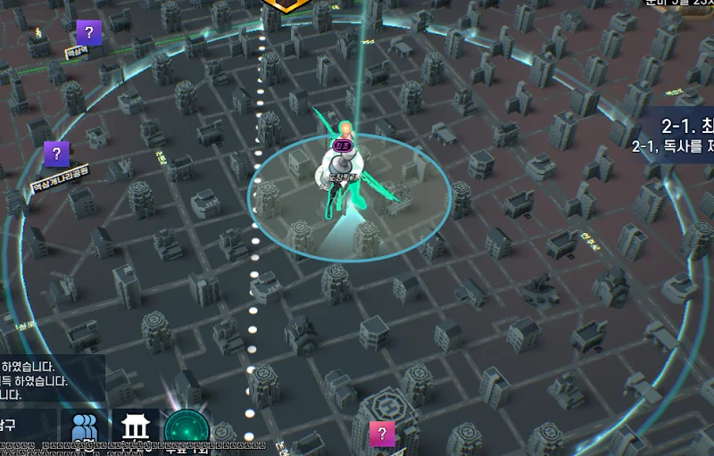 |
주머니 시야을 나타내는 원을 하나 더 그려준다
80+a(total 200m으로 예상)
물음표 오브젝트 생성로직 변경
유저 현재 위치에서 생성 (그리드 Stay - 한 그리드에 N분간 머물렀을 때(기존과 동일))
생성될 때 유저와 거리를 판단하여 레어리티가 높은 물음표가 생성되도록 하는 스크립트 필요.
본진근처(최초접속 시)에서 생성되는 것은 유지
생성될 때 본진과 거리를 판단하여 레어리티가 높은 물음표가 생성되도록 하는 스크립트 필요.
물음표 생성 알려주기
그리드에 오래 머물렀을 때 & 본진 근처에서 물음표를 생성하게 되는데 이때 시스템메시지를 표시해준다.
[알람]
- 본진 근처 정체 불명 컨텐츠 생성
- 주변에 정체 불명 컨텐츠 생성
3️⃣주머니
주머니 = 걸어다니게 유도하는 상자
주머니는 외형적으로 레어리티구분 없음.
다만 나오는 자원의 차이는 크다. (메쉬구분은 없지만 자체적 레어리티는 있어야함. 생성확률 조절 스크립트 필요)
카메라 축적
유물상자와 동일
애니메이션과 햅틱반응
- 시야 밖 움직임없음
- 시야 내 회전
- 거리 (보정값(80)을 제외하고 0m일 때, 햅틱과 꿈틀 애니매이션
주머니 생성
예시 이미지) 헥스 1개당 주머니 1개가 생성되는 방법 (헥스로 풀어본다.)
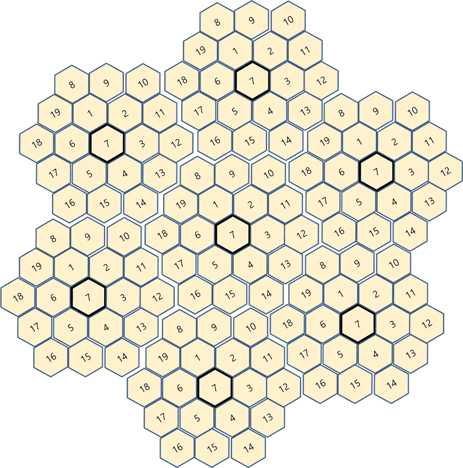 |
배치 방법
헥스
월드맵은 헥스로 이루어져 있으며, 헥스의 묶음으로 월드맵을 표시할 수 있다.
헥스를 구분할 때 기본 19개의 헥스가 한 묶음으로 한다.
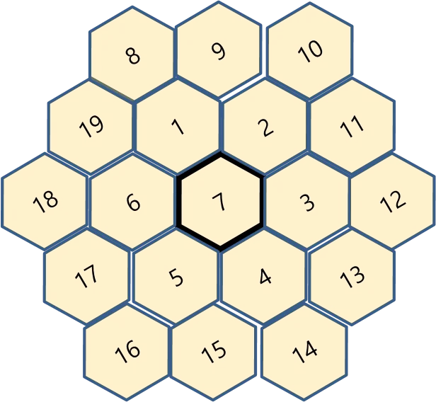 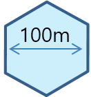
유저의 시야 범위
반지름 대략 200m (80m + 120m)
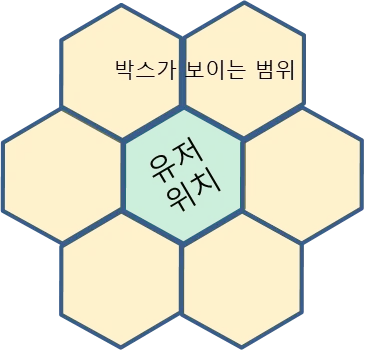
주머니가 배치될 헥스
의도
중심헥스의 GPS를 이용하여 19헥스에서 주머니가 생성될 위치를 책정한다.
매일 같은 위치에 생성되면 유저에게 쉽게 패턴이 파악되기 때문에 일정한 규칙을 가지고 랜덤하게 뿌려진다는 느낌을 유저에게 주도록한다.
규칙
- 하루 획득제한량이 있다.
- 한번 생성된 주머니는 다음날(오전6시)에 초기화 된다.
- 유저마다 주머니가 생성되는 헥스의 위치는 동기화 (
다를 수 있다.) - 19개의 헥스에 최소 N개의 주머니는 확정적으로 생성된다. 100% (어디에 생성될지는 랜덤)
단, 유저가 최초 접속한 헥스의 인근 헥스에 주머니를 1개 생성한다.
- 헥스 19개에 최대 생성가능 주머니 수는 최대 19개 (생성위치 랜덤)
- 1개씩 증가하는 확률은 스크립트로 제어 (3개, 4개, 5개...19개)
- ex) 가중치로 데이터 작성. (2개까지는 확정적으로 된다는 예제)
- 1개 100%
- 2개 100%
- 3개 50%
- 4개 10%
- 5개 1%
- 주머니가 생성되는 위치는 건물과 위치가 겹치면 안되기 때문에
- 각 헥스의 하단부분에서 생성되도록 한다
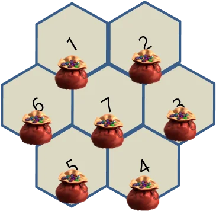
4️⃣유저 시야 처리
시야 밖의 주머니는 어떻게 알 수 있는가?
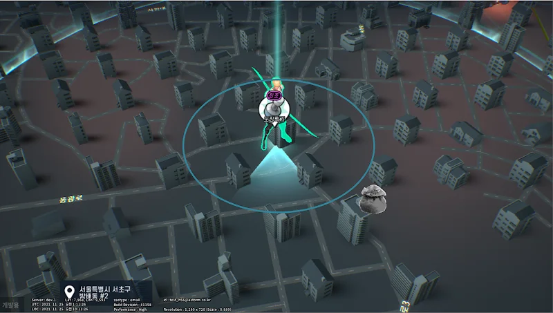 | 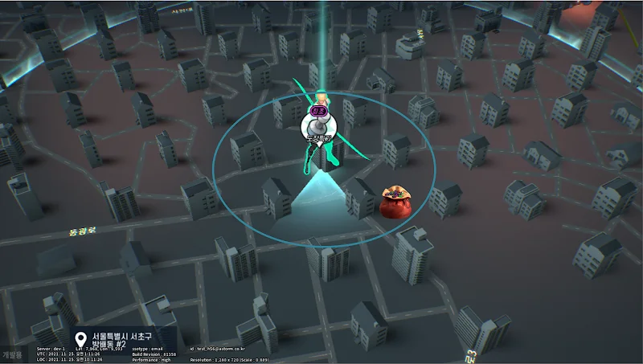 |
| ‘시야범위보다 + 헥스 1칸’ 거리에 있는 주머니는 알파 50%의 오브젝트로 보여진다. 시야범위에 가까울수록 짙어지도록 하는 것이 의도. 반투명한 주머니가 보여지는 거리는 ‘시야거리’ + 50m (스크립트) 예시) 시야거리경계에서 100m 멀 경우 = 투명도 80% 시야거리경계에서 10m 멀 경우 = 투명도8% | 시야범위 내에 들어왔을 때 투명도는 없다. |
빠른 속도로 이동할 때 주머니를 계속 보여줄 것 인가?
No
시속 12Km미만인 경우만 주머니를 볼 수 있다.
체크방법:
시속 12km일 경우 초속 3.333m
캐릭터 이동체크할 때 이동거리가 초당 3.333m이상일 경우 (체크간격 10초 -- 변동될 수 있습니다.)
캐릭터 시야 붉은 원 + 토스트 메시지 (이동속도가 너무 빠릅니다.)
체크간격마다 토스트 메시지 노출
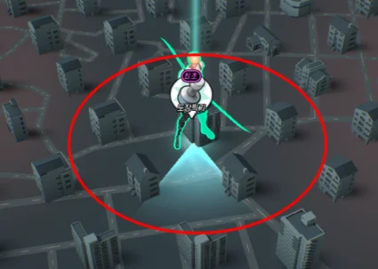
5️⃣필요 리소스
아이콘
주머니 아이콘
신규 주머니 모양의 아이콘 추가.
팝업
거리와 무관하게 오픈할 때 메가폰이 사용됨.
남은거리 {0} ← 는 값을 받아서 출력할 수 있도록.
이유:
상자&주머니를 오픈하는 플로우를 줄이려는 의도.
필요한 재화를 표시해주지 않을 경우 오픈을 시도할 때 마다 팝업을 보여주어야 함.
| 주머니 | 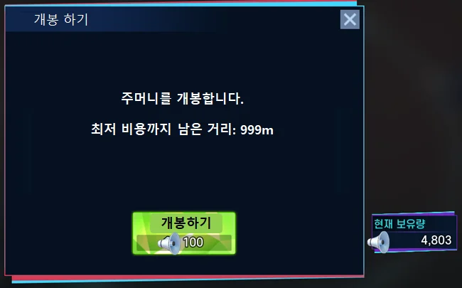 |
| 주머니(메가폰 부족) | 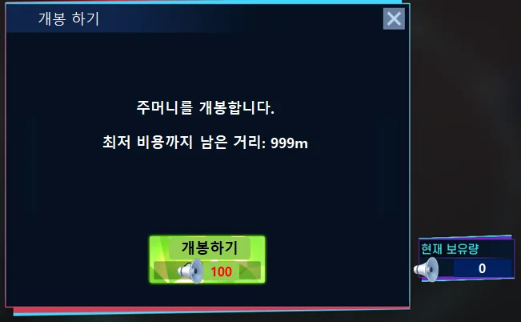 |
| 유물상자 | 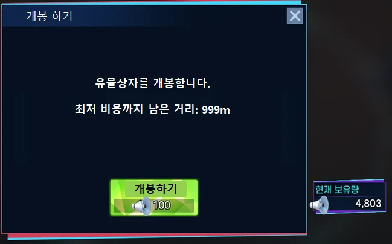 |
| 유물상자(메가폰 부족) | 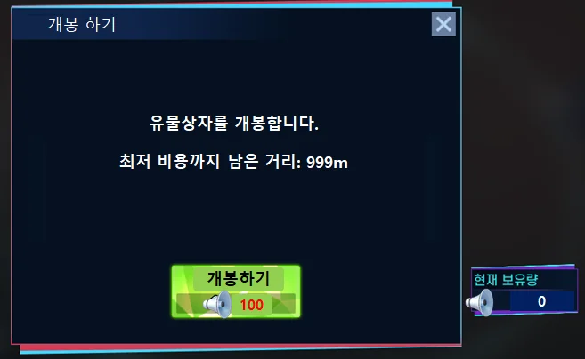 |
결과화면
획득제한 양을 결과화면에서 표시한다.
획득량 최대량 -10 부터 표시
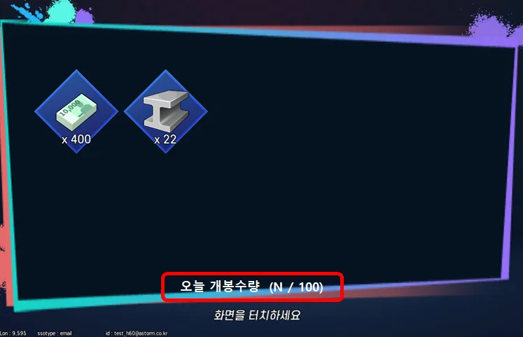 |
유물상자 레어리티 구분
빛 기둥 기존과 동일, 오픈연출 기존과 동일.
레어리티 이펙트 예시
이펙트가 아닌 박스 색상 다양화로 진행.
| 노말 | 레어 | 유니크 | 전설 | 에픽 |
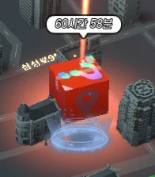 | 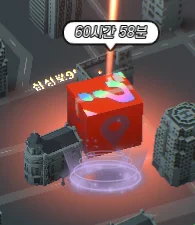 | 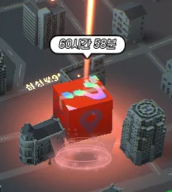 | 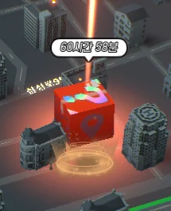 | 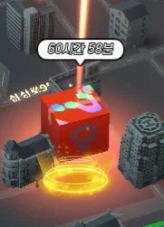 |
주머니 메쉬 (주머니 메쉬 제작 필요.)
- 오픈 가능거리 일 때 애니매이션 필요
- 예시
| idle | 오픈가능 범위 내 있을 때 |
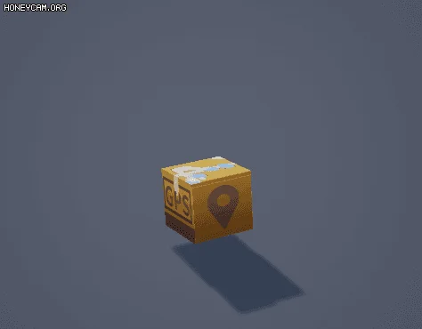 | 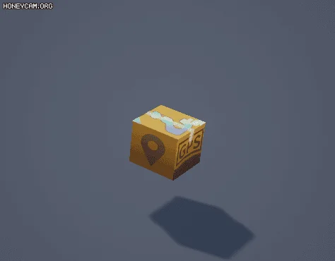 |
- 주머니가 오픈되는 애니메이션
- 어떻게 열려야되는지.. 문의.
- 메쉬는 레어리티에 따라 구분이 필요없으나 주머니 오픈연출 레어리티에 따라 구분 필요
- 박스와 동일하게 소박/ 중박/ 대박
| 소박 (노말) | 중박 (레어, 유니크) | 대박 (레전드.에픽) |
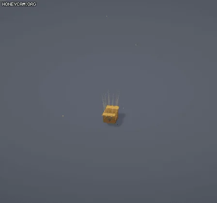 | 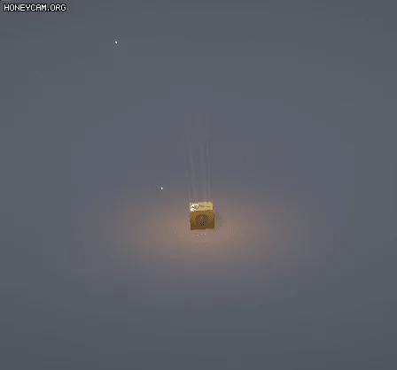 | 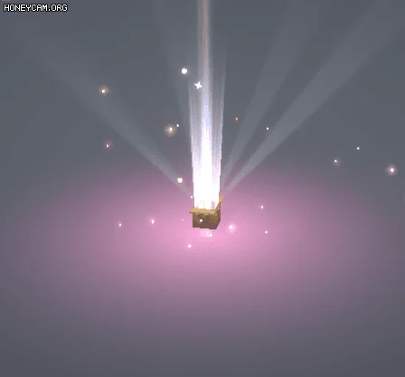 |
- 메쉬
메쉬예시
| 복주머니 컨셉 1 | 복주머니 컨셉 2 | 복주머니 컨셉 3 | 그냥 랜덤박스? |
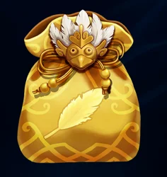 | 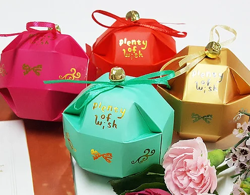 | 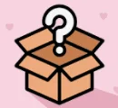 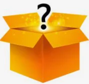 |
주머니는 빛기둥 제거 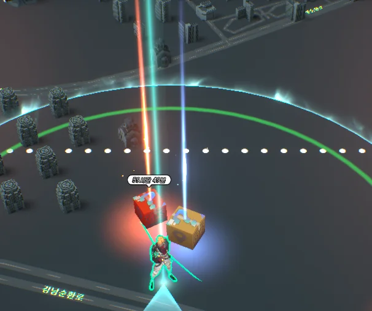
AD님이 바닥 이펙트는 만들어주기로 하셨슴.
스캐너 팝업 변경
최초스캔 보상 삭제
최초방문한 그리드에서 첫 스캔을 할 때 높은 레어리티의 유물상자를 생성해주던 것.
팝업 내용 수정
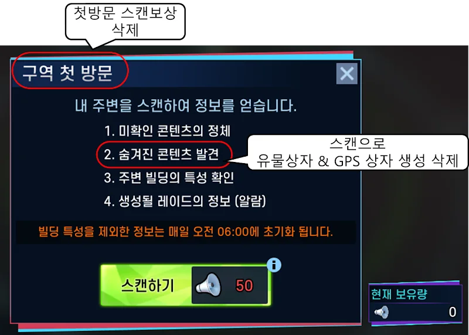
6️⃣물음표 생성 알려주기
생성 알림.
2종 (본진근처, 주변근처)
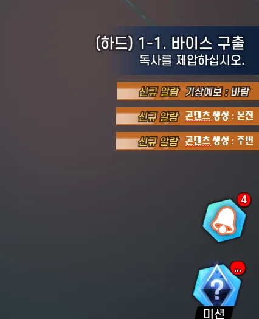
알림 터치시 위치에 화살표.
| 오늘의 빌딩을 화살표로 알려주는 규칙과 동일 | 생성된 물음표에 화살표. (다수일 경우 가장 가까운 1개) |
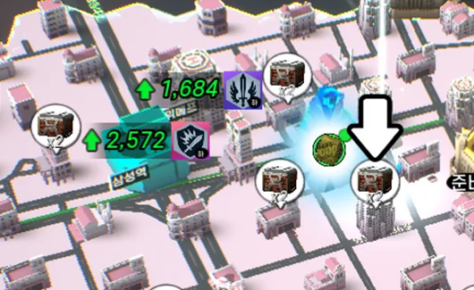 | 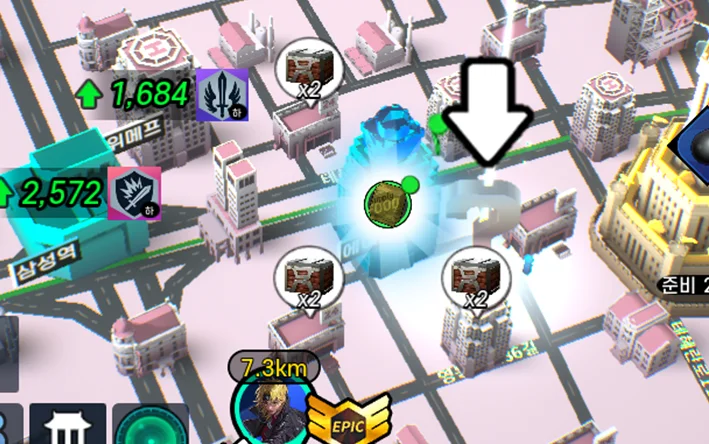 |
알람 (22-01-07 추가)
알람 삭제버튼 추가- hp, stay 각각 1개만 알람에 등록
- 생성된 물음표 수량과 무관.
- 새롭게 생성되는 물음표 오브젝트가 있다면 ‘알람’ 다시 등록. (레드닷 등록됨)
- 표시되는 화살표
- 가장 가까운 물음표
- 재접속시 처리 방향
- 기존 생성된 물음표 오브젝트가 있더라도 재접속한 위치에 물음표 오브젝트가 없을 경우 알람등록되지 않음.
삭제된 물음표 알람도 재접속하면 재 등록됨.
7️⃣플로우들
주머니&유물상자 오픈 UI 플로우
획득량 Over사항을 토스트 메시지로 표시
| uid: gps_reward_limit |
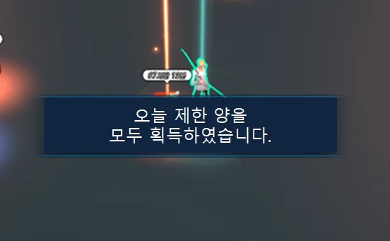 |
기본 플로우
| step 1 : 주머니 위치로 이동하여 주머니를 터치하면 팝업 | step 2 : 비용 팝업 오픈 개봉하기 터치 시 상자(주머니) 오픈 연출 | step 3: 오픈연출 → 주머니 보상결과 팝업 오픈 획득량 최대량 -10 부터 표시 | step 4: 오픈한 주머니 삭제 |
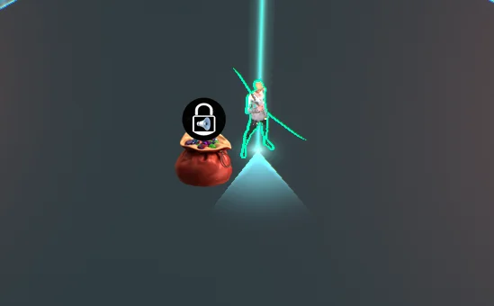 | 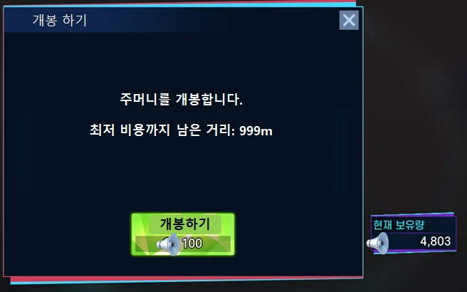 |  | 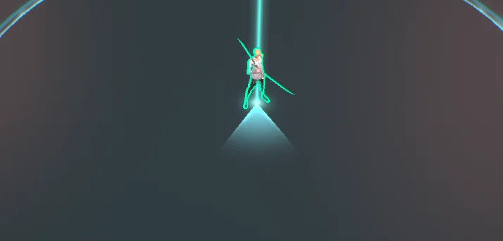 |
메가폰이 부족할 경우 플로우
| step 1 : 메가 폰 부족시 버튼은 활성화 상태, 비용 텍스트 붉은색 | step 2: 다이아로 메가폰 구매 팝업 오픈 (버튼 텍스트 ‘개봉하기’) (다이아가 부족할 경우→ 필요재화량 붉은색 텍스트) 재화부족 시 개봉하기버튼 눌렀을 때 토스트메시지 → 팝업 안닫음 uid: have_not_enough_something | step 3: 개봉하기 터치 시 상자(주머니) 오픈 연출 → 보상결과. 오늘 개봉량은 획득량 최대량 -10 부터 표시 |
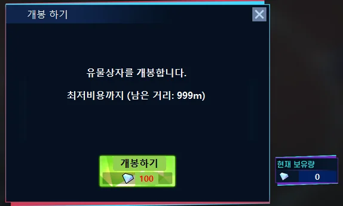 | 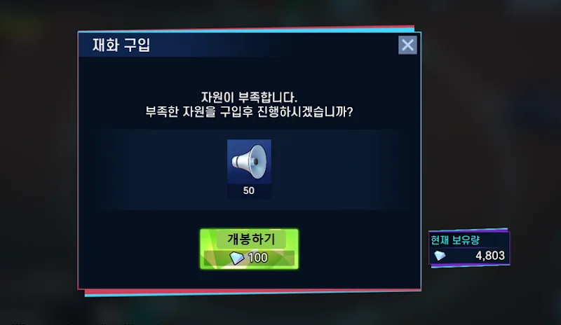 | 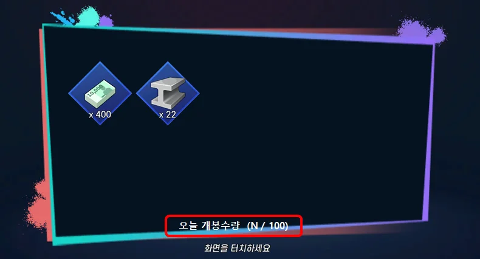 |
주머니 오픈 시스템 플로우 (레어리티를 미리 알 수 없기 때문에 서버에서 레어리티를 받아와야하지않을까요?.)
| 주머니 | 유물상자 |
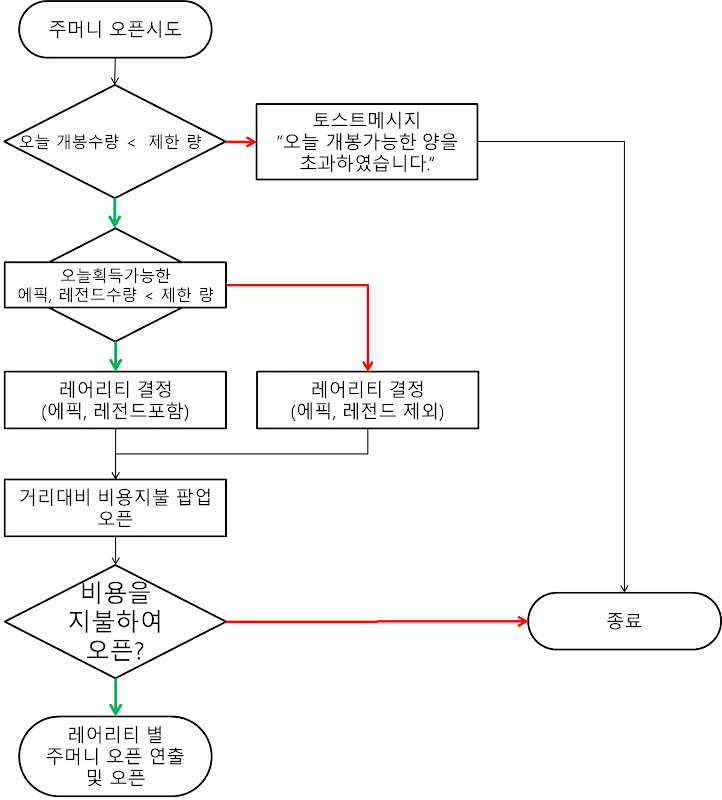 | 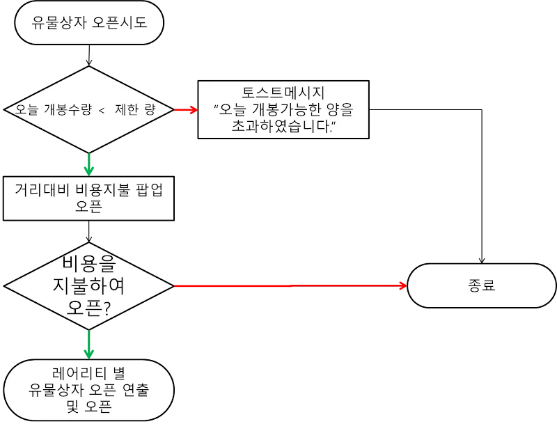 |
8️⃣스크립트
제거되는 것들
gps_contents_spawn_count.json
스캔했을 때 확정적으로 유물상자와 GPS상자를 얼마나 생성할지 컨트롤 하던 스크립트
spawn_group_type
question_mark_obj_spawn_type_scan ← 스캔으로 생성되는 것들
question_mark_obj_type_chain_box ← 유물상자를 오픈했을 때, 유물상자에서 유물상자를 생성하던 타입
spawn_obj_type
question_mark_obj_type_scan_treasure_box ← 스캔으로 생성되던 유물상자
question_mark_obj_type_gps_box ← 스캔으로 생성되던 GPS 상자
초기화시간
common_constants.json
daily_reset_time 참조
비용처리
gps_distance_cost.json
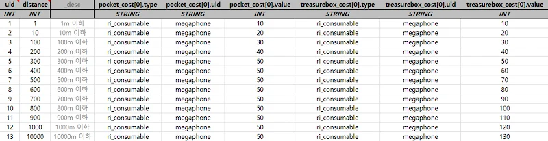
주머니 컨텐츠 언락
unlock_gps_pocket ← 스캐너 오픈과 동일하게
팝업 오픈 후 위치가 변경되었을 때, (N m 보정)
주머니/유물상자 메가폰사용하여 오픈할 때, 이동 중이라면
팝업이 오픈된 위치와 몇미터가 멀어지면 인정하지 않을 것인가? (개봉시 토스트메시지 표시, 팝업닫음)
gps_constants.json
reward_popup_correction_value (int) 100m
토스트메시지
common_toast_message.json
일일제한 토스트메시지
uid: gps_reward_limit
text: 오늘 제한 양을 모두 획득 하였습니다.
시야 밖의 주머니 터치시
uid: gps_untouchable_reward
text: 범위 밖 입니다. (남은거리 {0})
남은거리 : 현재거리 - 시야범위
팝업 오픈 후 위치가 일정거리 이상 멀어졌을 때, (gps_constants.json reward_popup_correction_value (int) 100m 값 참조)
보상을 받으려고 할 경우(개봉버튼 터치 시) 팝업을 닫고 토스트 메시지를 표시
uid: gps_untouchable_reward
text: 범위 밖 입니다. (남은거리 {0})
남은거리 : 현재거리 - 시야범위
이동 중 주머니 터치 시(&중복터치 팝업에서 주머니 아이콘 터치 시) (22-01-13 추가)
uid: gps_reward_speed_limit
text: 이동 중에는 주머니를 오픈 할 수 없습니다.
개봉할 거리가 변경되어 가격도 함께 변경되었을 때 (22-01-13 추가)
uid: gps_reward_open_price_change
text: 거리가 변경되어 가격이 변경되었습니다.
생성알람
content_alarm.json
uid: alarmtype_question_obj_spawn_user
content type: content_type_gps_reward
text: 주변에 미확인 콘텐츠가 생성되었습니다.
uid: alarmtype_question_obj_spawn_hq
content type: content_type_gps_reward
text: 본진 주변에 미확인 콘텐츠가 생성되었습니다.
주머니 생성 스크립트
gps_pocket_spawn_prob.json
수량컨트롤 & 레어리티 ( ㅠㅅㅠ)
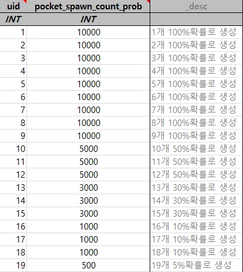
생성조건에 걸리지 않을 경우 더 이상 생성되지않도록 한다.
ex) 위 표에서 볼 때,
9개까지는 100% 확률로 생성해주고, 10개째 50%확률에 걸리지않을 경우 해당 헥스 그룹에서는 9개만 생성된다. (더이상 생성하지않는다.)
주머니 보상 레어리티
gps_pocket_reward_weight.json
주머니를 오픈했을 때, 해당 확률에 따라서 보상이 정해짐.
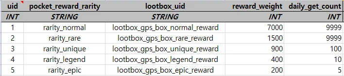
시야범위
gps_constant.json
pocket_vision_range(INT) 200(미터)
pocket_preview_range(INT) 250(미터)
하루 획득 가능한 주머니량 & 유물상자 량
gps_constant.json
daily_pocket_limit_all
daily_treasurebox_limit_all
물음표 거리에 비례하여 레어리티 증가
최초접속 시 본진근처
현재
spawn_obj_type의 question_mark_obj_type_hq_treasure_box 를 거리 min~max(생성비율 확률가짐) 내에 일정 수량을 prob(가중치)로 구분하여 뿌림.
수정될 사항
배치될 거리를 구분
low(에픽,레전드 생성확률 엄청 낮음), mid(에픽,레전드 생성확률 낮음), high(에픽,레전드 생성확률 있음)
Low 거리 몇? 일 때 생성확률
Mid 거리 몇? 일 때 생성확률
High 거리 몇? 일 때 생성확률
Stay(그리드에 머물렀을 때) 물음표 생성
현재
spawn_obj_type의 question_mark_obj_type_hq_treasure_box 를 거리 min~max(생성비율 확률가짐) 내에 일정 수량을 prob(가중치)로 구분하여 뿌림.
수정될 사항
배치될 거리를 구분
low(에픽,레전드 생성확률 엄청 낮음), mid(에픽,레전드 생성확률 낮음), high(에픽,레전드 생성확률 있음)
Low 거리 몇? 일 때 생성확률
Mid 거리 몇? 일 때 생성확률
High 거리 몇? 일 때 생성확률
현재 스크립트
gps_contents_spawn_prob.json
삭제컬럼
스캔확률
first_scan_prob
normal_scan_prob
체인박스 생성 타입
chain_spawn_group_type
채인박스 생성확률
chain_spawn_group_prob
삭제 값
스캔해서 생성되는 오브젝트
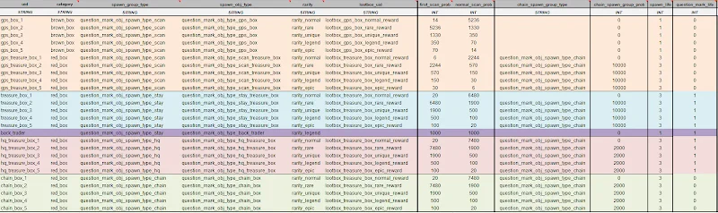
수정방향
min 거리(500, 공성가능거리) ~ max거리(obj_spawn_range_max) 를 5등분 하여 레어리티 확률을 따로 가져간다.
distance_step_weight[0]~[4]추가
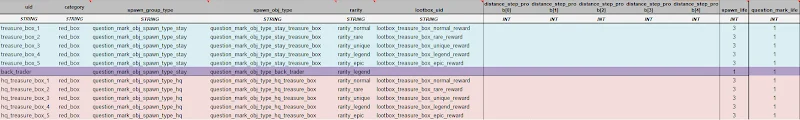
주머니 생성 / 획득 관련 클라 - 서버 구현 방법 정리
- 한 헥스에는 주머니가 하나만 스폰되고, 그 주머니를 해당 헥스에는 주머니가 스폰 안되므로, 서버/클라 통신때 주머니가 스폰된 헥스 인덱스를 주머니의 식별자로 사용한다.
- ex : col=19381, row=2711의 주머니를 까도록 서버로 요청함
- 로그인때 서버에게 오늘 깐 주머니들의 목록을 받는다
- 클라이언트
- 클라이언트에서는 유저가 현재 위치한 헥스가 바뀔 때마다, 매니저에게 내 주변에 위치한 박스들의 헥스/좌표 목록을 요청한다. (시드를 통해 계산하므로 서버 요청 필요x)
- 헥스가 바뀔때 요청하는 것은 너무 자주 요청해서 생기는 부하를 방지하기 위함.
- UIU_GpsDataManager::GetNearGpsPocketSpawnInfos함수로 구현 완료
- 이때 실제로 보여야 되는 범위보다 넉넉한 범위의 박스를 리턴함
- 목록을 받아서 오늘 이미 깐 헥스는 제외시킨 뒤, 현재 스폰된 주머니 오브젝트를 갱신한다. (새 목록에 없는 것 파괴 / 오브젝트가 없는 것 스폰)
- 주머니와 나와의 거리에 따라 visibility / 투명도 / 애니메이션을 갱신한다 (이 처리는 위치한 헥스가 바뀌지 않아도 내 위치 좌표 변경때마다 해야 함)
- 주머니 깔 때 서버로 요청한다.
- 까는 연출에 레어리티 결정이 필요하므로, 일단 요청해서 응답을 받은 뒤에 주머니가 까지는 연출을 한다.
- 클라이언트에서는 유저가 현재 위치한 헥스가 바뀔 때마다, 매니저에게 내 주변에 위치한 박스들의 헥스/좌표 목록을 요청한다. (시드를 통해 계산하므로 서버 요청 필요x)
- 서버
- 특정 헥스의 주머니를 까는 패킷이 오면 csc함수를 이용해 다음과 같은 검증을 한다
- 이 유저가 오늘 이미 깐게 아닌지
- 해당 헥스에 실제로 주머니가 스폰되었는지 (CheckGpsPocketValiditySample 코드 참조)
- 유저와 실제 주머니 스폰 좌표가 너무 멀지 않은지 (CheckGpsPocketValiditySample 코드 참조)
- 서버에서 레어리티를 결정해서 클라이언트로 응답으로 내려준다.
- 특정 헥스의 주머니를 까는 패킷이 오면 csc함수를 이용해 다음과 같은 검증을 한다
- 남은 과제
- 일일 초기화때 바뀌는 랜덤시드를 어떻게 계산할 것인가?
- 그냥 날짜+시간으로 잘 계산해야 되나?
- 로그인때 서버에서 시드를 받고 일일초기화 태스크에서 일일초기화때 다시 그날의 시드를 받는 처리를 해야 되나?
- 일일 초기화때 바뀌는 랜덤시드를 어떻게 계산할 것인가?
관련 치트 공유
- Ctrl+H모드에서 헥스 클릭 : 해당 헥스가 속한 구역에 주머니 스폰 여부 표시 (스폰 : 초록색, 미스폰 : 빨간색)
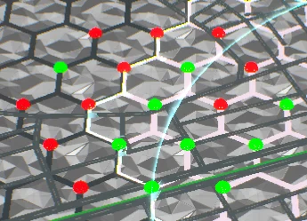
- ShowNearGpsPocket 미터범위
- 내 위치로부터 범위 내에 있는 주머니 스폰 좌표를 표시
- 정확히 미터에서 잘리는건 아니고 그 이상으로 표시됩니다
- 너무 큰 값을 입력하면 엄청나게 느릴 수 있으니 주의 (5000 이하 추천)
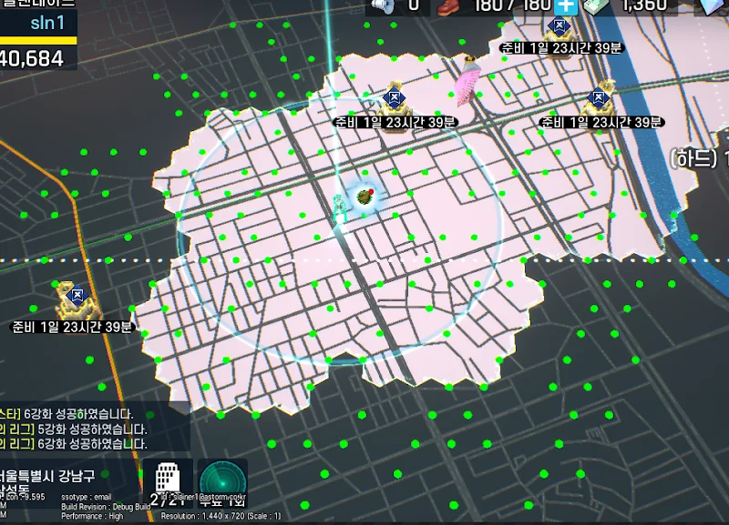